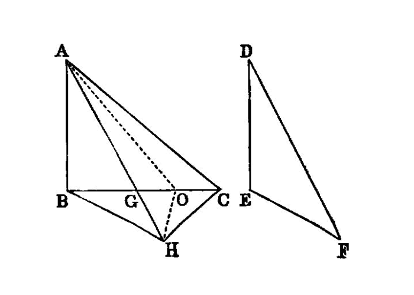

similar triangles¶
I.24
If two triangles have the two sides equal to two sides respectively, but have the one of the angles contained by the equal straight lines greater than the other, they will also have the base greater than the base.
—Euclid
{kind=link}
Let ABC, DEF be two triangles having the two sides AB, AC equal to the two sides DE, DF respectively, namely AB to DE, and AC to DF, and let the angle at A be greater than the angle at D;
I say that the base BC is also greater than the base EF. [1]
For, since the angle BAC is greater than the angle EDF, let there be constructed, on the straight line DE, and at the point D on it, the angle EDG equal to the angle BAC; [I.23] let DG be made equal to either of the two straight lines AC, DF, and let EG, FG be joined.
Then, since AB is equal to DE, and AC to DG, the two sides BA, AC are equal to the two sides ED, DG, respectively;
and the angle BAC is equal to the angle EDG; therefore the base BC is equal to the base EG. [I.4]
Again, since DF is equal to DG,
the angle DGF is also equal to the angle DFG; [I.5] therefore the angle DFG is greater than the angle EGF.
Therefore the angle EFG is much greater than the angle EGF.
And, since EFG is a triangle having the angle EFG greater than the angle EGF,
and the greater angle is subtended by the greater side, [I.19] the side EG is also greater than EF.
But EG is equal to BC.
Therefore BC is also greater than EF.
Therefore etc.
references¶
[I.4]: /elem.1.4 “Book 1 - Proposition 4” [I.5]: /elem.1.5 “Book 1 - Proposition 5” [I.19]: /elem.1.19 “Book 1 - Proposition 19” [I.23]: /elem.1.23 “Book 1 - Proposition 23”